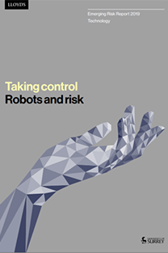

As the world becomes increasingly automated, it is forcing underwriters to adapt and
navigate a new risk environment. Meanwhile insurers are leveraging the potential of AI
themselves to remain competitive, improve processes and increase efficiency. Lloyd’s
have commissioned two reports in collaboration with the University of Surrey that explore
these trends in more detail.
“Taking control: artificial intelligence and insurance” analyses the associated risks
of AI implementation as well as the potential for AI to help insurers improve their operations
and develop new products. Building on this, “Taking control: robots and risk” investigates
the impact “collaborative robots” (or cobots) on the economy, and the subsequent risks
implications for the insurance industry.

Taking control: artificial intelligence and insurance
This report identifies four risks areas for AI: trust and transparency, ethics, security and
safety. It highlights that as artificial intelligence systems become more complex, cyber
breaches are likely to have an even greater impact. The report also explores new business
opportunities for insurers from developing new products for companies using the AI to applying
the technology to improve insurance processes and deliver better value.
Download

Taking control: robots and risk
In the future millions of jobs could be taken over by increasingly sophisticated robots or
cobots (“collaborative robots”), according to various predictions. This report explores robotics
potential to significantly change the risk landscape in many parts of the economy, including:
manufacturing, agriculture, healthcare and retail. It also explores the opportunity for insurers
to collaborate with clients as data from cobots will provide a much greater understanding of risk
and offer opportunities for improved risks and pricing models.
Download